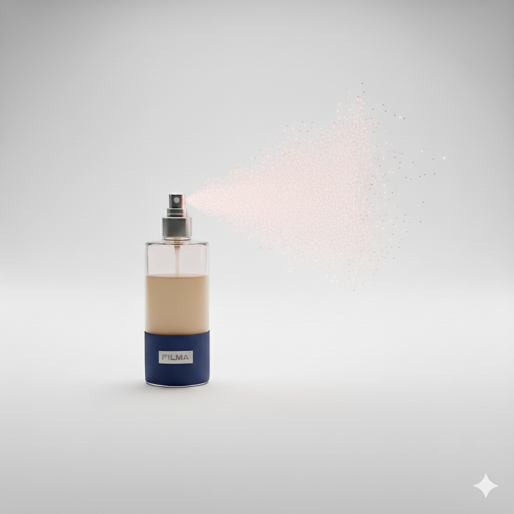

Fragancia Vainilla
$8.500 ARSDisfrutá de la suavidad y calidez de nuestra Fragancia Vainilla: un aroma dulce y relajante pensado para acompañarte en tus momentos de descanso. Su esencia natural ayuda a calmar la mente y crear un ambiente acogedor que invita a desconectar.
Combinála con tu almohada FILMA para potenciar los beneficios de la aromaterapia y transformar tus noches en un refugio de bienestar. Ideal para quienes buscan una sensación de paz profunda antes de dormir.
Comprar